Gallery › Scatterplot
Scatterplot
The scatterplot, drawn a dozen ways — grouped, coloured, log-scaled, across datasets. Every figure is
rendered by cinderplot straight from a CSV, no R at plot time. Hover any plot for the command;
flip the toggle to see the R original it reproduces.
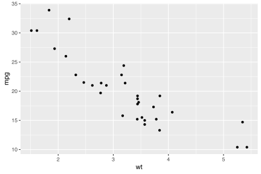
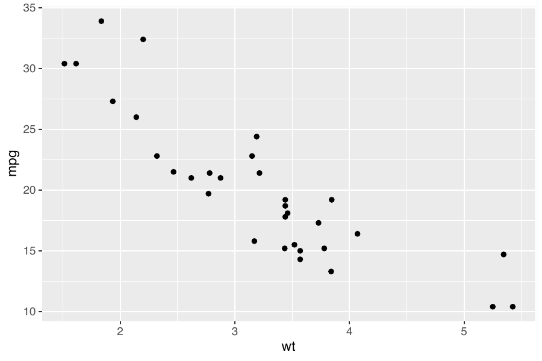
# cinderplot
cinderplot 'data/mtcars.csv
+ aes(wt, mpg)
+ geom_point()' \
-o out.svg# R + ggplot2
ggplot(mtcars, aes(wt, mpg)) + geom_point()
Basic
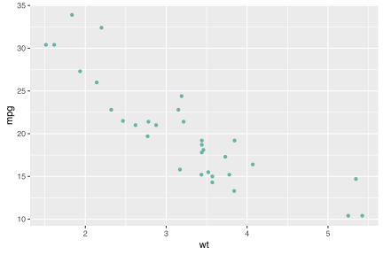
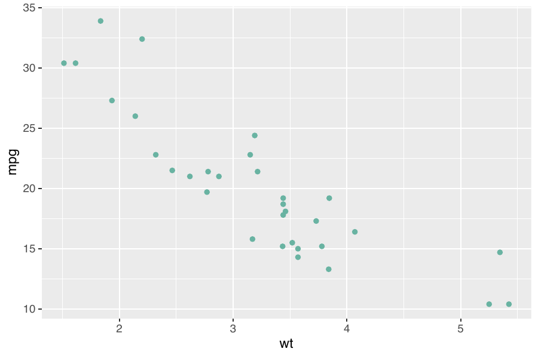
# cinderplot
cinderplot 'data/mtcars.csv
+ aes(wt, mpg)
+ geom_point(color="#69b3a2")' \
-o out.svg# R + ggplot2
ggplot(mtcars, aes(wt, mpg)) + geom_point(color = "#69b3a2")
Custom colour
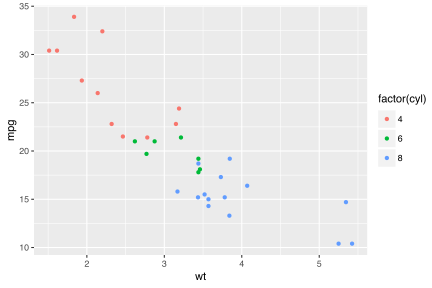
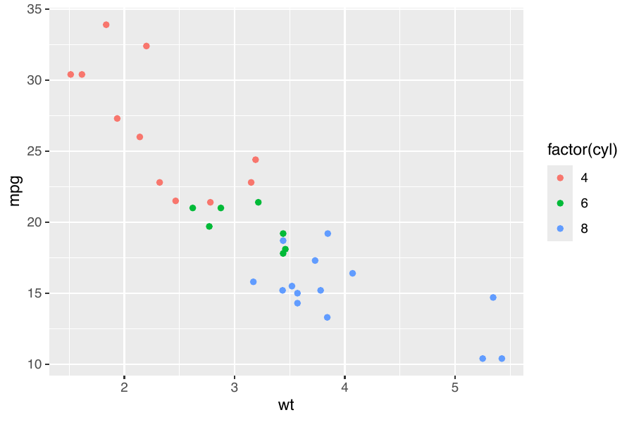
# cinderplot
cinderplot 'data/mtcars.csv
+ aes(wt, mpg, colour=factor(cyl))
+ geom_point()' \
-o out.svg# R + ggplot2
ggplot(mtcars, aes(wt, mpg, colour = factor(cyl))) + geom_point()
Colour by group
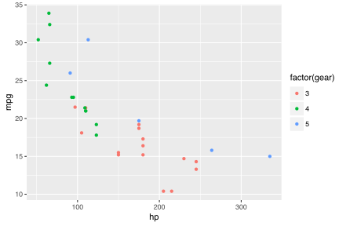
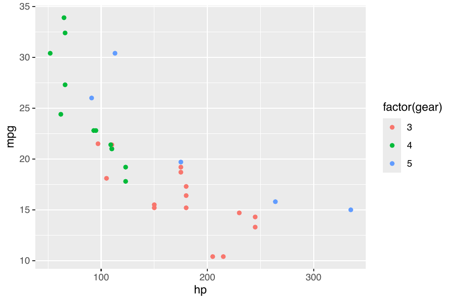
# cinderplot
cinderplot 'data/mtcars.csv
+ aes(hp, mpg, colour=factor(gear))
+ geom_point()' \
-o out.svg# R + ggplot2
ggplot(mtcars, aes(hp, mpg, colour = factor(gear))) + geom_point()
Groups, other axes
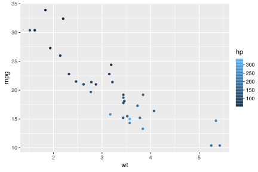
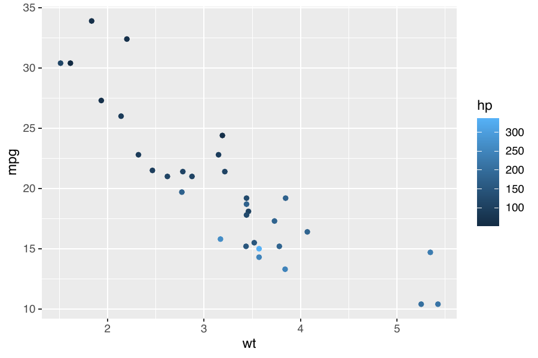
# cinderplot
cinderplot 'data/mtcars.csv
+ aes(wt, mpg, colour=hp)
+ geom_point()
+ scale_colour_gradient(low="#132b43", high="#56b1f7")' \
-o out.svg# R + ggplot2
ggplot(mtcars, aes(wt, mpg, colour = hp)) + geom_point() +
scale_colour_gradient(low = "#132b43", high = "#56b1f7")
Continuous colour
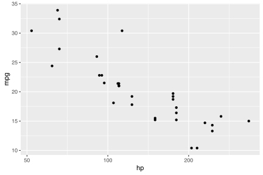
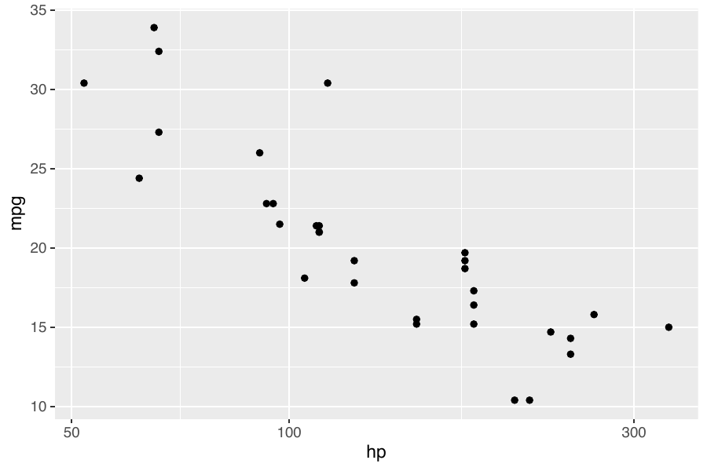
# cinderplot
cinderplot 'data/mtcars.csv
+ aes(hp, mpg)
+ geom_point()
+ scale_x_log10()' \
-o out.svg# R + ggplot2
ggplot(mtcars, aes(hp, mpg)) + geom_point() + scale_x_log10()
Log x-axis
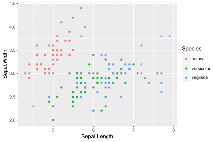
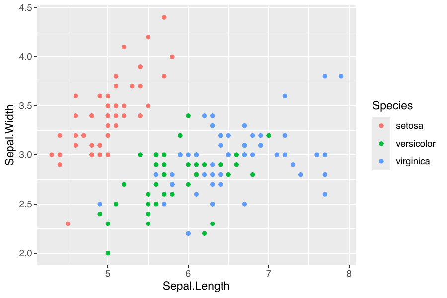
# cinderplot
cinderplot 'data/iris.csv
+ aes(Sepal.Length, Sepal.Width, colour=Species)
+ geom_point()' \
-o out.svg# R + ggplot2
ggplot(iris, aes(Sepal.Length, Sepal.Width, colour = Species)) + geom_point()
Iris · sepals
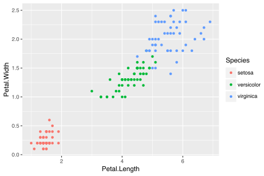
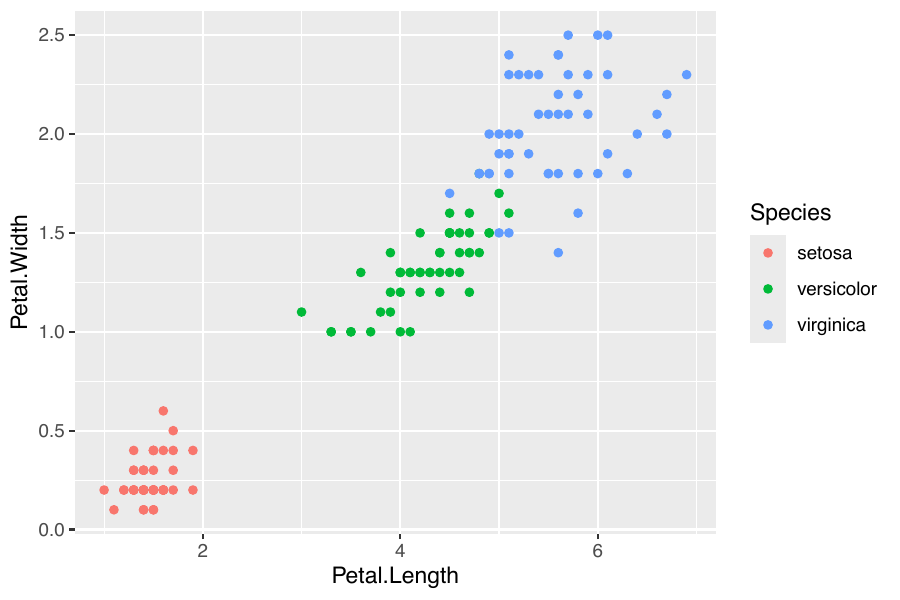
# cinderplot
cinderplot 'data/iris.csv
+ aes(Petal.Length, Petal.Width, colour=Species)
+ geom_point()' \
-o out.svg# R + ggplot2
ggplot(iris, aes(Petal.Length, Petal.Width, colour = Species)) + geom_point()
Iris · petals
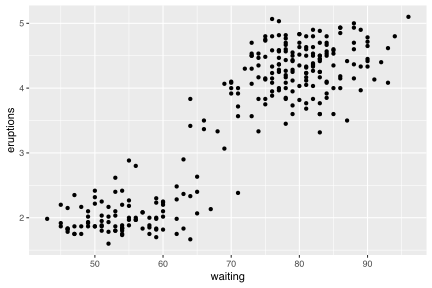
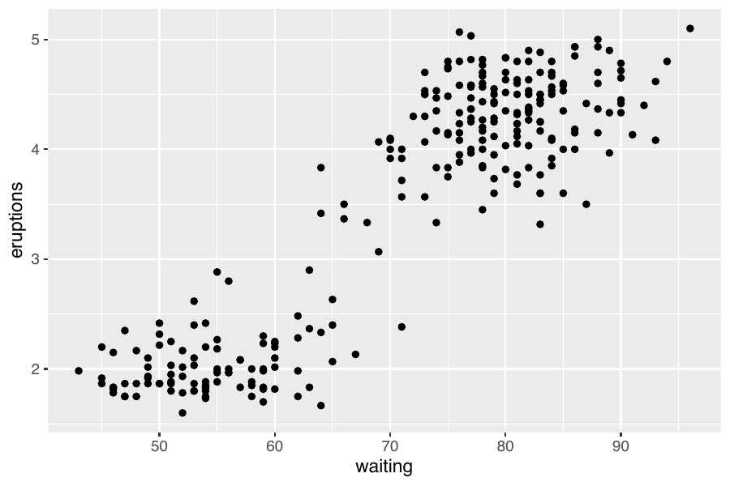
# cinderplot
cinderplot 'data/faithful.csv
+ aes(waiting, eruptions)
+ geom_point()' \
-o out.svg# R + ggplot2
ggplot(faithful, aes(waiting, eruptions)) + geom_point()
Old Faithful
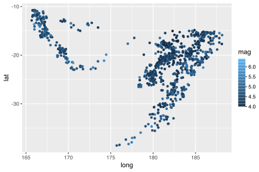
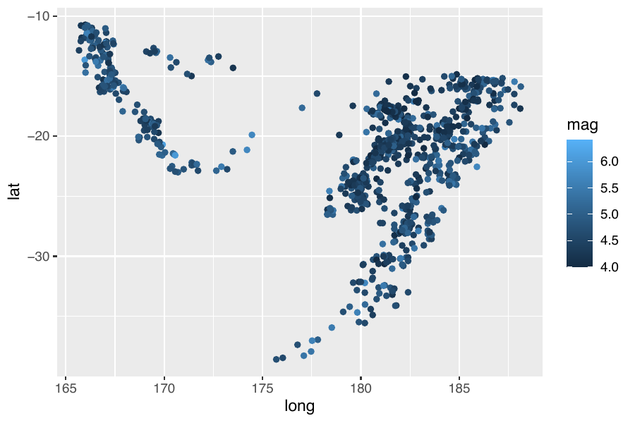
# cinderplot
cinderplot 'data/quakes.csv
+ aes(long, lat, colour=mag)
+ geom_point()
+ scale_colour_gradient(low="#132b43", high="#56b1f7")' \
-o out.svg# R + ggplot2
ggplot(quakes, aes(long, lat, colour = mag)) + geom_point() +
scale_colour_gradient(low = "#132b43", high = "#56b1f7")
Fiji earthquakes
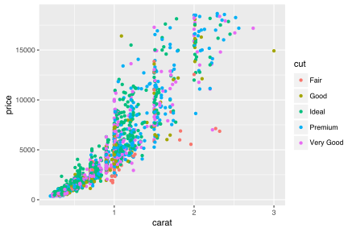
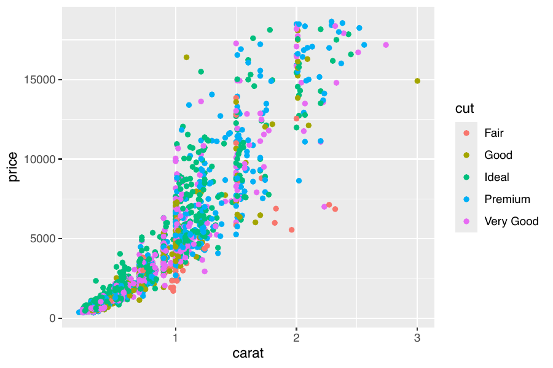
# cinderplot
cinderplot 'data/diamonds_sample.csv
+ aes(carat, price, colour=cut)
+ geom_point()' \
-o out.svg# R + ggplot2
# diamonds, a 2000-row sample
ggplot(diamonds, aes(carat, price, colour = cut)) + geom_point()
Diamonds (2k sample)
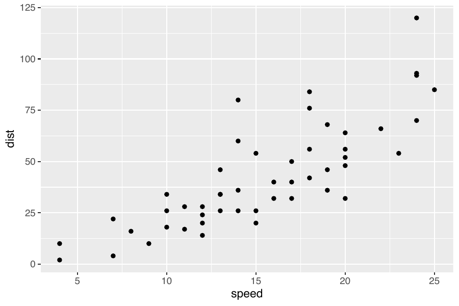
# cinderplot
cinderplot 'data/cars.csv
+ aes(speed, dist)
+ geom_point()' \
-o out.svg# R + ggplot2
ggplot(cars, aes(speed, dist)) + geom_point()
Cars: speed vs dist
Same figures, no R. cinderplot reproduces ggplot2's theme_gray —
panel, gridlines, hue palette, axis breaks, legends — from one C binary that reads the CSV and writes
PDF or SVG in milliseconds.